21. 扰动建模#
关键要点
在应用 Augur 时，确保细胞类型能够被有把握地标注。使用差异丰度检验来发现混杂效应，并用差异基因表达来寻找扰动效应在基因层面的来源。
P 值（遵循 R 版 Augur 的实现）使用 scGen 等工具预测扰动响应，对高表达基因效果很好，但对低表达基因则有挑战。
Mixscape 流程中的线性判别分析步骤主要起辅助可视化的作用。UMAP 中的距离应谨慎解读，因此并不总能一眼推断出不同敲除（knockout）之间的相似性和差异。
环境设置
安装 conda:
在创建环境之前，请确保 conda 已安装在您的系统中。
保存 yml 内容:
将 yml 选项卡中的内容复制到名为
environment.yml的文件中。
创建环境:
打开终端或命令提示符。
运行以下命令：
conda env create -f environment.yml
激活环境:
创建好环境后，使用以下命令激活它：
conda activate <environment_name>
替换
<environment_name>，名称就是在environment.yml文件中指定的那个。在 yml 文件里，它看起来像这样：name: <environment_name>
验证安装:
通过运行以下命令，检查环境是否创建成功：
conda env list
name: perturbation_modeling
channels:
- defaults
- conda-forge
dependencies:
- conda-forge::python=3.13.11
- conda-forge::pertpy=1.0.4
21.1. 动机#
单细胞实验方案的进步，使得可以进行大规模多重化（multiplexed）实验，在数千种独特条件下测量数十万个细胞。这些通常被称为“扰动（perturbation）”，即由外部影响造成的暂时或永久变化 [Srivatsan et al., 2020]。最近，这类技术已被改造用于以多模态读出来刻画 CRISPR-Cas9 [Frangieh et al., 2021, Papalexi et al., 2021]，全基因组扰动 [Replogle et al., 2021]，以及组合扰动 [Wessels et al., 2022]。尽管实验技术有所进步，但探索“组合式基因敲除”或“药物组合”的巨大扰动空间仍然具有挑战性。这一广阔的探索空间，推动了用于建模单细胞扰动响应的计算方法的发展 [Ji et al., 2021].
扰动建模涉及以下几个方面[Ji et al., 2021]:
扰动响应：在给定对照和处理条件信息的情况下，预测扰动之后的组学特征。预测的好坏可以通过预测特征与真实值之间的相关性来评估。还可以进一步预测一些表型测量，例如 IC50 值、剂量-反应曲线下面积、毒性和存活率。
目标和机制：利用组学测量来预测扰动的靶标和机制。即使对于尚未表征的化合物，也可以通过扰动建模来确定药物的作用机制（mode of action）。
扰动相互作用：预测多个扰动的组合效应，以理解遗传因素与药物（或药物组合）之间相互关联的效应。
化学特性：利用组学测量来预测扰动的化学性质，例如分子指纹、R 基团、药效团（pharmacophore），甚至完整的化合物。
针对所有这些步骤的、稳健且易用的工具仍在开发之中。因此，在接下来的几节中，我们只介绍三种方法，用于处理可借助单细胞扰动数据解决的一部分任务：
使用以下方法，找出受扰动影响最大的细胞类型： Augur 应用于 Kang 2018 [Kang et al., 2018].
使用以下方法，预测单细胞对扰动的转录响应： scGen 应用于 Kang 2018 [Kang et al., 2018].
使用以下方法，量化基因 CRISPR 扰动的敏感性： Mixscape 应用于 Papalexi 2021 [Papalexi et al., 2021].
21.2. 识别受扰动影响最大的细胞类型#
21.2.1. 动机#
扰动很少对所有细胞产生相同的效果。特别是，不同的细胞类型、或处于细胞周期不同状态的细胞，受影响的程度可能不同。在这里，为此我们将借助 Augur （由 Skinnider 等人提出） [Skinnider et al., 2021, Squair et al., 2021]，它提供了一种量化响应程度的方法。
Augur 模型
Augur 旨在根据细胞类型对实验扰动的响应，对它们进行排序或优先级排序（输入是单细胞基因表达数据）。其基本思想是：在分子测量的空间中，对所诱导的扰动反应强烈的细胞，比那些几乎或完全没有响应的细胞类型，更容易被分成“受扰动”和“未受扰动”两组。这种可分离性，是通过衡量“在每种细胞类型内实验标签（例如处理和对照）能被预测得多好”来量化的。Augur 在多轮交叉验证中训练一个机器学习模型来预测每种细胞类型的实验标签，然后根据衡量模型精度的指标得分，对细胞类型的响应进行优先级排序。对于类别型数据，默认指标是曲线下面积（AUC）；对于数值型数据，则使用一致性相关系数作为模型精度的替代指标，而模型精度又近似地反映扰动响应。
21.2.2. Augur的限制#
由于 Augur 衡量的是扰动响应的程度，它需要有明确区分的细胞类型。如果由于持续、平滑的过程或基因表达轨迹（例如细胞分化）导致细胞类型标注本身就很困难，那么 Augur 可能无法给出足够精细的排序。可以构建一棵描述不同聚类（曾用于细胞类型注释）之间关系的聚类树，并把 Augur 应用于所有可能的聚类分辨率，从而确定最合适的分辨率、进而为所关注的扰动确定合适的注释 [Squair et al., 2021].
此外，那些介导组织或机体层面对特定扰动作出响应的细胞类型，本身可能就包含响应细胞和非响应细胞两类亚群。把细胞划分为响应细胞和非响应细胞本身也可能并不准确，因为某一细胞类型的细胞可能分布在扰动响应强度的一条连续谱上。然而，Augur 并不解析单细胞层面的扰动响应，而只是把它们作为细胞类型的平均值来汇总。[Squair et al., 2021].
某些扰动效应可能主要源于特定细胞类型相对丰度的变化。然而，Augur 中的二次抽样（subsampling）程序丢弃了关于相对丰度的所有信息。事实上，Augur 在交叉验证之前会从每个条件中抽取数量相等的细胞。某一特定细胞类型丰度的任何变化，都可能伴随着该细胞类型内在转录特征的变化。强烈的扰动甚至可能导致某些细胞类型被完全耗尽、或只在受扰动时才突然出现。因此，建议对每种细胞类型都做差异丰度检验，以帮助结合背景来理解 Augur 的分析结果 [Squair et al., 2021].
在此，我们将使用对 Augur 的原始 R 实现的一个快速重新实现，它使用了扰动分析工具箱 pertpy。pertpy 借助 scverse 生态系统，因此与 AnnData 完全兼容（在 Python 生态系统中）。
21.2.3. 预测 IFN-β 刺激下细胞类型的优先级#
为了演示 Augur，我们将P 值（遵循 R 版 Augur 的实现）使用 Kang 数据集，这是一份基于 10x 液滴的 scRNA-seq 外周血单核细胞（PBMC）数据集，来自 8 名狼疮（Lupus）患者，在用 IFN-β 处理 6 小时之前和之后采集（共 16 个样本）[Kang et al., 2018].
我们这里的目标是弄清楚哪些细胞类型受 IFN-β 处理的影响最大。
首先，我们导入pertpy和scanpy。
import warnings
warnings.filterwarnings("ignore")
warnings.simplefilter("ignore")
# This is required to catch warnings when the multiprocessing module is used
import os
os.environ["PYTHONWARNINGS"] = "ignore"
import pertpy as pt
import scanpy as sc
pertpy 提供了一个方便的数据加载器来访问 Kang 数据集。
adata = pt.dt.kang_2018()
我们重命名 label to condition 以及条件本身，以提高可读性。
adata.obs.rename({"label": "condition"}, axis=1, inplace=True)
adata.obs["condition"].replace({"ctrl": "control", "stim": "stimulated"}, inplace=True)
此数据集包含 PBMCs [Kang et al., 2018] ，涵盖七种不同的细胞类型。
adata.obs.cell_type.value_counts()
cell_type
CD4 T cells 11238
CD14+ Monocytes 5697
B cells 2651
NK cells 1716
CD8 T cells 1621
FCGR3A+ Monocytes 1089
Dendritic cells 529
Megakaryocytes 132
Name: count, dtype: int64
现在，我们基于所关注的估计器（estimator）用 pertpy 创建一个 Augur 对象，以衡量数据集中每种细胞类型的扰动标签有多可预测。估计器的可选项有 random_forest_classifier 或 logistic_regression_classifier 用于类别型数据，以及 random_forest_regressor 数值型数据。所有估计器都会使用一个 Params 类来定义更多参数。这里，我们将使用一个 random_forest_classifier 它通常是一个稳健而快速的选择，也适合我们的类别型数据。
ag_rfc = pt.tl.Augur("random_forest_classifier")
接下来，我们需要把 AnnData 对象加载成 Augur 能够处理的格式。这可以很容易地用我们 Augur 对象的 load 函数来完成。
loaded_data = ag_rfc.load(adata, label_col="condition", cell_type_col="cell_type")
loaded_data
AnnData object with n_obs × n_vars = 24673 × 15706
obs: 'nCount_RNA', 'nFeature_RNA', 'tsne1', 'tsne2', 'label', 'cluster', 'cell_type', 'replicate', 'nCount_SCT', 'nFeature_SCT', 'integrated_snn_res.0.4', 'seurat_clusters', 'y_'
var: 'name'
obsm: 'X_pca', 'X_umap'
这样我们就能用 predict 函数来运行 Augur。一般来说，Augur 可以以两种方式运行：
一种基于原始 Augur 实现的特征选择（
select_variance_feature=True），它也是默认选项。这种方法会移除在该细胞类型内细胞间变化很小的特征。更多细节请参阅 Augur 的 Nature Protocols 论文[Squair et al., 2021]。选择这种特征选择时，结果与 R 中的 Augur 实现非常相似。基于
scanpy.pp.highly_variable_genes。这种特征选择减少了模型训练时所考虑的基因数量，并可能导致 Augur 分数偏高，因为高变基因对于区分细胞类型非常有用。不过，这种模式更快，并且能很好地恢复扰动对细胞类型的影响。我们建议在“扰动预计会对特定细胞类型产生强烈影响”的超大型数据集上使用它。
由于我们预计 IFN-β 不会对特定细胞类型产生异常强烈的影响，因此我们用原始的 Augur 特征选择来运行 Augur。为了进一步提高分辨率，我们把 subsample_size 设为 20（默认值：50），它对应于每种细胞类型随机抽取的细胞数。
v_adata, v_results = ag_rfc.predict(
loaded_data, subsample_size=20, n_threads=4, select_variance_features=True, span=1
)
v_results["summary_metrics"]
Set smaller span value in the case of a `segmentation fault` error.
Set larger span in case of svddc or other near singularities error.
| CD14+ Monocytes | CD4 T cells | Dendritic cells | NK cells | CD8 T cells | B cells | FCGR3A+ Monocytes | Megakaryocytes | |
|---|---|---|---|---|---|---|---|---|
| mean_augur_score | 0.920476 | 0.669376 | 0.847007 | 0.673299 | 0.626247 | 0.783628 | 0.888934 | 0.512619 |
| mean_auc | 0.920476 | 0.669376 | 0.847007 | 0.673299 | 0.626247 | 0.783628 | 0.888934 | 0.512619 |
| mean_accuracy | 0.817033 | 0.601172 | 0.744249 | 0.610330 | 0.575714 | 0.674505 | 0.780330 | 0.510513 |
| mean_precision | 0.835072 | 0.630593 | 0.779699 | 0.642700 | 0.587059 | 0.742801 | 0.792996 | 0.526175 |
| mean_f1 | 0.806636 | 0.564695 | 0.735157 | 0.591230 | 0.552114 | 0.633906 | 0.780933 | 0.406510 |
| mean_recall | 0.826349 | 0.575714 | 0.756032 | 0.616984 | 0.580000 | 0.622540 | 0.816508 | 0.388413 |
结果表包含了拟合模型的若干评估指标。在解读 IFN-β 响应的细胞类型优先级排序时，只有 mean_augur_score 是相关的，它对应于 mean_auc。该值越高，拟合模型就越容易区分对照细胞状态和受扰动细胞状态。因此，这种细胞类型受到的扰动效应更强。我们来把这种效应可视化。
lollipop = ag_rfc.plot_lollipop(v_results)
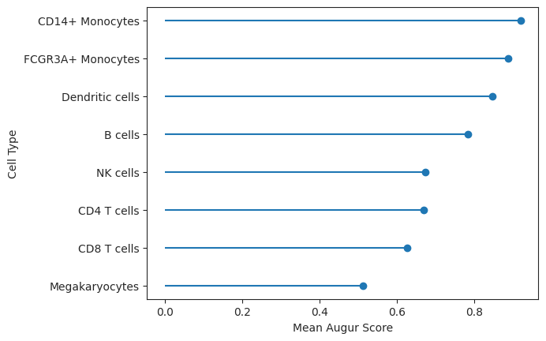
如观察所见，CD14+ 单核细胞受 IFN-β 影响最大，而巨核细胞（Megakaryocyte）受影响最小。这大致与原始论文中各相应细胞类型的差异表达基因数量相吻合 [Kang et al., 2018].
相应 mean_augur_score 也保存在 v_adata.obs 中，也可以在 UMAP 中绘制。
sc.pp.neighbors(v_adata)
sc.tl.umap(v_adata)
sc.pl.umap(adata=v_adata, color=["augur_score", "cell_type", "label"])
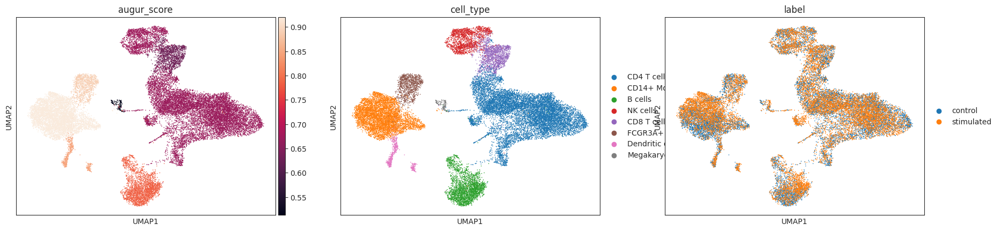
21.2.4. 确定对优先级排序最重要的基因#
对优先级排序贡献最大的基因（如 Augur 分数所反映的）对应于我们模型的特征重要性。这些特征重要性保存在结果对象中，可以很方便地绘制出来。
important_features = ag_rfc.plot_important_features(v_results)
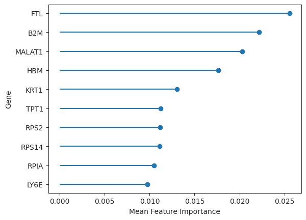
现在可以进一步探究这些基因，例如它们在通路或其他基因集中的作用。不过，由于 Augur 是在细胞类型层面做推断，它并不直接确定参与扰动响应的单个基因。Augur 的作者自己也建议：在单个基因层面做推断时，使用差异基因表达检验在概念上和实践上都是更合适的方法 [Squair et al., 2021].
21.2.5. 差异优先级排序#
Augur 还能够进行“差异优先级排序”：它通过执行一个置换检验（permutation test），来识别在两轮不同的细胞类型优先级排序之间、曲线下面积（AUC）存在统计显著差异的细胞类型（例如，对药物 A 和 B 的响应，与未处理对照相比）。
Bhattacherjee 等人给小鼠施用可卡因，并在戒断后 48 小时和 15 天分别取前额叶皮层样本做 scRNA-seq[Bhattacherjee et al., 2019].
现在，我们将评估 withdraw_15d_Cocaine 和 withdraw_48h_Cocaine 条件，并与之相比的是 Maintenance_Cocaine。基本上，差异优先级排序是通过一种 置换检验 得到的：它比较两组细胞类型优先级排序之间的 AUC 差异，再与“在随机置换样本标签之后、同样这两组排序之间的预期 AUC 差异”相比较[Squair et al., 2021]。在这个过程中，用户首先对药物 A 进行细胞类型优先级排序（withdraw_15d_Cocaine）和药物 B（withdraw_48h_Cocaine）；然后计算药物 A 与药物 B 之间的 AUC 差异。为了计算该 AUC 差异的统计显著性，再通过置换样本标签、并在置换后的数据上重复细胞类型优先级排序，为每种细胞类型计算出一个经验零分布（empirical null distribution）。随后计算置换 P 值。因此，这一流程既能识别出在不同条件之间细胞类型优先级排序存在统计显著差异的细胞类型，也能识别出该细胞类型在哪种条件下转录上更可分。
每个变体都会运行一次 default 模式，再运行一次 permute 模式，以便我们执行 置换检验。作为第一步，我们P 值（遵循 R 版 Augur 的实现）使用 pertpy 获取 bhattacherjee 数据集，并创建一个 Augur 对象，它同样使用随机森林分类器。
bhattacherjee_adata = pt.dt.bhattacherjee()
ag_rfc = pt.tl.Augur("random_forest_classifier")
接下来，我们在 Maintenance_Cocaine 和 withdraw_15d_Cocaine 上运行 Augur，并同时P 值（遵循 R 版 Augur 的实现）使用 augur_mode=default 和 augur_mode=permute （如前所述）。注意，为简单起见，我们对数据集做对数归一化（log normalize）。
sc.pp.log1p(bhattacherjee_adata)
# Default mode
bhattacherjee_15 = ag_rfc.load(
bhattacherjee_adata,
condition_label="Maintenance_Cocaine",
treatment_label="withdraw_15d_Cocaine",
)
bhattacherjee_adata_15, bhattacherjee_results_15 = ag_rfc.predict(
bhattacherjee_15, random_state=None, n_threads=4
)
bhattacherjee_results_15["summary_metrics"].loc["mean_augur_score"].sort_values(
ascending=False
)
Filtering samples with Maintenance_Cocaine and withdraw_15d_Cocaine labels.
Set smaller span value in the case of a `segmentation fault` error.
Set larger span in case of svddc or other near singularities error.
Oligo 0.801417
Astro 0.769116
Microglia 0.743707
OPC 0.743605
Inhibitory 0.656202
NF Oligo 0.625692
Excitatory 0.623923
Endo 0.588481
Name: mean_augur_score, dtype: float64
# Permute mode
bhattacherjee_adata_15_permute, bhattacherjee_results_15_permute = ag_rfc.predict(
bhattacherjee_15,
augur_mode="permute",
n_subsamples=100,
random_state=None,
n_threads=4,
)
Set smaller span value in the case of a `segmentation fault` error.
Set larger span in case of svddc or other near singularities error.
现在，我们对以下两者做同样的处理： Maintenance_Cocaine 和 withdraw_48h_Cocaine.
# Default mode
bhattacherjee_48 = ag_rfc.load(
bhattacherjee_adata,
condition_label="Maintenance_Cocaine",
treatment_label="withdraw_48h_Cocaine",
)
bhattacherjee_adata_48, bhattacherjee_results_48 = ag_rfc.predict(
bhattacherjee_48, random_state=None, n_threads=4
)
bhattacherjee_results_48["summary_metrics"].loc["mean_augur_score"].sort_values(
ascending=False
)
Filtering samples with Maintenance_Cocaine and withdraw_48h_Cocaine labels.
Set smaller span value in the case of a `segmentation fault` error.
Set larger span in case of svddc or other near singularities error.
Astro 0.624898
OPC 0.598050
NF Oligo 0.592619
Microglia 0.587789
Inhibitory 0.560000
Oligo 0.557630
Endo 0.540272
Excitatory 0.527143
Name: mean_augur_score, dtype: float64
# Permute mode
bhattacherjee_adata_48_permute, bhattacherjee_results_48_permute = ag_rfc.predict(
bhattacherjee_48,
augur_mode="permute",
n_subsamples=100,
random_state=None,
n_threads=4,
)
Set smaller span value in the case of a `segmentation fault` error.
Set larger span in case of svddc or other near singularities error.
Skipping NF Oligo cell type - 79 samples is less than min_cells 100.
这样我们就可以在散点图中查看两次运行的 Augur 分数。对角线是恒等函数（y=x）。如果两次的数值相同，它们就会落在这条线上。
scatter = ag_rfc.plot_scatterplot(bhattacherjee_results_15, bhattacherjee_results_48)
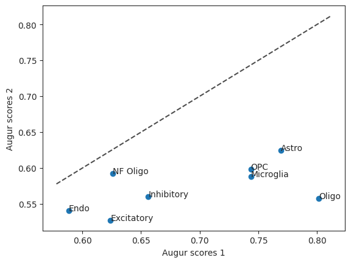
为了找出在比较 withdraw_48h_Cocaine 和 withdraw_15d_Cocaine 时哪种细胞类型受影响最大，我们可以进行差异优先级排序。
pvals = ag_rfc.predict_differential_prioritization(
augur_results1=bhattacherjee_results_15,
augur_results2=bhattacherjee_results_48,
permuted_results1=bhattacherjee_results_15_permute,
permuted_results2=bhattacherjee_results_48_permute,
)
pvals
| cell_type | mean_augur_score1 | mean_augur_score2 | delta_augur | b | m | z | pval | padj | |
|---|---|---|---|---|---|---|---|---|---|
| 0 | Astro | 0.769116 | 0.624898 | -0.144218 | 1000 | 1000 | -10.058451 | 0.001998 | 0.002331 |
| 1 | Microglia | 0.743707 | 0.587789 | -0.155918 | 974 | 1000 | -9.252930 | 0.053946 | 0.053946 |
| 2 | Endo | 0.588481 | 0.540272 | -0.048209 | 1000 | 1000 | -3.010936 | 0.001998 | 0.002331 |
| 3 | Oligo | 0.801417 | 0.557630 | -0.243787 | 1000 | 1000 | -15.904970 | 0.001998 | 0.002331 |
| 4 | Inhibitory | 0.656202 | 0.560000 | -0.096202 | 1000 | 1000 | -6.018999 | 0.001998 | 0.002331 |
| 5 | OPC | 0.743605 | 0.598050 | -0.145556 | 1000 | 1000 | -8.786800 | 0.001998 | 0.002331 |
| 6 | Excitatory | 0.623923 | 0.527143 | -0.096780 | 1000 | 1000 | -7.399583 | 0.001998 | 0.002331 |
P 值（遵循 R 版 Augur 的实现）使用 b（即置换值大于原始值的次数）和 m（即运行的置换次数）来计算。由于 b 对除 Microglia 以外的所有细胞都相同，因此它们的 P 值也相同。
diff = ag_rfc.plot_dp_scatter(pvals)
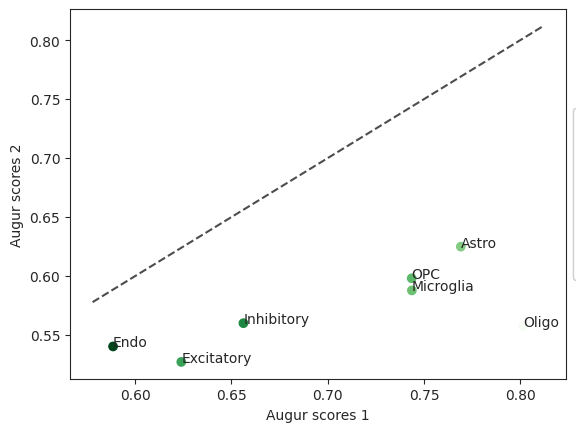
在这种情况下，“Inhibitory（抑制性）”这种细胞类型在两个被比较的条件之间差别不大，这可能表明造成了永久性损伤。
21.3. 预测CD4-T细胞的IFN-β响应#
许多扰动响应建模方法，旨在为那些尚未测量过扰动响应的、未见过的群体，预测其对刺激（无论是药物、基因敲除还是疾病）的转录组响应，以帮助推进实验设计和假说生成。当某个特定群体由于实验或样本失败（例如细胞分选失败）而无法被测量、高昂的实验成本使人无法探索所有可能、或某些细胞类型出现频率很低时，就可能出现“未能捕捉到受扰动处理细胞”的情况。在上述所有情形中，对缺失群体进行计算机模拟（in silico）预测，都能帮助人们就“是否开展新实验”作出有依据的决定。
已经基于自编码器（autoencoder，AE）开发出多种扰动响应建模方法[Amodio et al., 2018, Lotfollahi et al., 2020, Lotfollahi et al., 2021, Lotfollahi et al., 2019, Russkikh et al., 2020, Wei et al., 2022, Yuan et al., 2021]——自编码器是一种深度学习架构，用于学习数据的低维表示。
变分自编码器
自编码器的基本原理是：它由两部分组成——编码器和解码器。编码器试图学习输入数据（通常是基因表达）的一个潜在空间，该潜在空间能被解码器以最小的重建误差解码回来。潜在空间的维度通常低于输入空间。AE 的一个扩展是变分自编码器（VAE），它通过为整个空间赋予生成能力，解决了 AE 潜在空间未正则化的问题。未正则化的潜在空间，实际上只对那些形成了聚类的、彼此分明的类别具备很强的采样能力。著名的 MNIST 手写数字数据集，只允许在所确定的 10 个聚类中的任意一个里采样出数字 0–9；但如果尝试在聚类之外采样，就会得到垃圾输入。AE 的编码器输出的是潜在向量，而 VAE 的编码器为每个输入输出的是潜在空间中某个预定义分布的参数。VAE 通过强制潜在分布服从正态分布，使潜在空间得到了正则化。
在这里，我们演示 scGen 的应用 [Lotfollahi et al., 2019]，它是一个与向量运算相结合的变分自编码器。该模型学习数据的一个潜在表示，并在其中估计出对照（未处理）细胞与受扰动（处理）细胞之间的一个差异向量。随后，把这个估计出的差异向量加到所关注细胞类型或群体的对照细胞上，从而预测每个单细胞的基因表达响应。在这里，我们用 scGen 来预测一个 CD4-T 细胞群体对 IFN-β 的响应，这个群体在训练期间被人为地留出（未见过），以模拟上述真实场景之一。我们再次使用一个数据集，它包含来自 8 名狼疮（Lupus）患者的外周血单核细胞（PBMC），这些细胞或经 IFN-β 处理、或未经处理，来自 [Kang et al., 2018] ，涵盖七种不同的细胞类型。
作为第一步，我们导入 scanpy 和 scgen 以便我们能够处理 AnnData 对象并P 值（遵循 R 版 Augur 的实现）使用 scGen。
import pertpy as pt
import scanpy as sc
21.3.1. 为 scGen 设置 Kang 数据集#
我们将再次P 值（遵循 R 版 Augur 的实现）使用 pertpy 获取Kang数据集。
adata = pt.dt.kang_2018()
scGen 在对数变换后的数据上效果最好。由于特征空间缩小，选择高变基因可以加快计算。
sc.pp.log1p(adata)
sc.pp.highly_variable_genes(adata)
我们重命名 label to condition 以及条件本身，以提高可读性。
adata.obs.rename({"label": "condition"}, axis=1, inplace=True)
adata.obs["condition"].replace({"ctrl": "control", "stim": "stimulated"}, inplace=True)
此数据集包含 PBMCs [Kang et al., 2018] ，涵盖七种不同的细胞类型。
adata.obs.cell_type.value_counts()
cell_type
CD4 T cells 11238
CD14+ Monocytes 5697
B cells 2651
NK cells 1716
CD8 T cells 1621
FCGR3A+ Monocytes 1089
Dendritic cells 529
Megakaryocytes 132
Name: count, dtype: int64
我们从训练数据中删除所有 CD4T 细胞（adata_t），以模拟实验中没有捕获到某个特定细胞群体的真实场景。
adata_t = adata[
~(
(adata.obs["cell_type"] == "CD4 T cells")
& (adata.obs["condition"] == "stimulated")
)
].copy()
cd4t_stim = adata[
(
(adata.obs["cell_type"] == "CD4 T cells")
& (adata.obs["condition"] == "stimulated")
)
].copy()
scGen 要求数据采用特定格式，通过 AnnData 和 setup_anndata 函数来实现。它需要样本的键—— batch_key （在我们的例子中是 "condition"），以及细胞类型标签键—— labels_key ("cell_type").
pt.tl.SCGEN.setup_anndata(adata_t, batch_key="condition", labels_key="cell_type")
21.3.2. 模型构建与训练#
scGen 需要修改 AnnData 对象（adata_t）来构造模型对象，它可用于训练模型。这个函数接收多个用户输入，包括每个隐藏层的节点数（n_hidden），这些隐藏层位于瓶颈层（即网络的中间层）之前；以及这类层的数量（n_layers）。此外，用户还可以调整瓶颈层的维度，瓶颈层用于计算受扰动细胞与对照细胞之间的差异向量。这里使用的默认参数取自原始论文。在实践中，更宽的隐藏层能带来更好的重建精度，而这对于我们“预测许多基因的扰动响应”的目标至关重要。
model = pt.tl.SCGEN(adata_t, n_hidden=800, n_latent=100, n_layers=2)
scGen 是一个拥有数千个参数的神经网络，用于学习数据的低维表示。在这里，我们P 值（遵循 R 版 Augur 的实现）使用 train 方法，利用训练数据来估计这些参数。这里有多个参数： max_epochs 是允许模型更新其参数的最大迭代次数，这里设为 100。训练的 epoch 数越多，所需计算时间越长，但可能有助于得到更好的结果。batch_size 是模型为更新其参数而每次所看到的样本（单细胞）数量。在 scGen 的情形下，较小的取值通常能带来更好的结果。最后还有 early_stopping，它使模型能够在其结果经过若干个 early_stopping_patience 训练 epoch 后仍未改善时停止训练。早停（early stopping）机制可以防止对训练数据的潜在过拟合，而过拟合会导致对未见过群体的泛化能力变差。
model.train(
max_epochs=100, batch_size=32, early_stopping=True, early_stopping_patience=25
)
INFO Jax module moved to TFRT_CPU_0.Note: Pytorch lightning will show GPU is not being used for the Trainer.
GPU available: False, used: False
TPU available: False, using: 0 TPU cores
IPU available: False, using: 0 IPUs
HPU available: False, using: 0 HPUs
Epoch 26/100: 26%|██▌ | 26/100 [1:28:13<4:11:07, 203.61s/it, v_num=1, train_loss_step=1.06e+3, train_loss_epoch=4.52e+3]
Monitored metric elbo_validation did not improve in the last 25 records. Best score: 479.507. Signaling Trainer to stop.
为了可视化模型所学到的数据表示，我们P 值（遵循 R 版 Augur 的实现）使用 UMAP 算法绘制模型的潜在表示。其中， get_latent_representation() 为每个细胞返回一个 100 维向量。我们把这些潜在表示存放在 .obsm 槽中，该槽属于 AnnData 对象。
adata_t.obsm["scgen"] = model.get_latent_representation()
接下来，我们用计算出的潜在表示重新计算邻居图和 UMAP 嵌入，最后在 UMAP 图中把这个新嵌入可视化。
sc.pp.neighbors(adata_t, use_rep="scgen")
sc.tl.umap(adata_t)
sc.pl.umap(adata_t, color=["condition", "cell_type"], wspace=0.4, frameon=False)
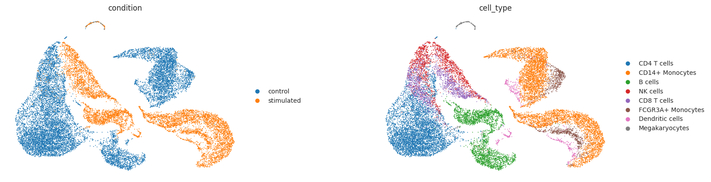
如上所观察到的，IFN-β 刺激在所有细胞类型中都诱导了强烈的转录变化
21.3.3. 预测CD4T对IFN-β刺激的反应#
在模型训练完成后，我们可以让模型为训练数据中每个对照 CD4T 细胞模拟 IFN-β 响应的效果。这个预测是通过 predict 方法，该方法接收相应的标签（ctrl_key 和 stim_key ，见下文），它们位于 condition （由用户先前提供的）列中，该列属于 AnnData 对象。该方法在潜在空间中估计“对照”与“受刺激”细胞之间的一个全局差异向量；随后把这个向量加到 celltype_to_predict 中指定的每个单细胞上（这里是 CD4T）。
pred, delta = model.predict(
ctrl_key="control", stim_key="stimulated", celltype_to_predict="CD4 T cells"
)
# we annotate the predicted cells to distinguish them later from ground truth cells.
pred.obs["condition"] = "predicted stimulated"
INFO Received view of anndata, making copy.
INFO Input AnnData not setup with scvi-tools. attempting to transfer AnnData setup
INFO Received view of anndata, making copy.
INFO Input AnnData not setup with scvi-tools. attempting to transfer AnnData setup
INFO Received view of anndata, making copy.
INFO Input AnnData not setup with scvi-tools. attempting to transfer AnnData setup
21.3.4. 评估预测的IFN-β反应#
在前几节中，我们预测了对照群体中每个 CD4T 细胞对 IFN-β 的响应。由于单细胞测序具有破坏性——意味着无法在某次特定扰动前后测量同一个细胞——因此无法在 IFN-β 刺激后直接评估对同一细胞的预测。不过，数据中我们有一组用 IFN-β 处理过的细胞，可以用它们来衡量预测出的细胞群体与真值（ground truth）细胞吻合得有多好。为此，我们通过在主成分分析（PCA）空间中观察对照、预测和实际 CD4T IFN-β 细胞的嵌入，对预测做定性评估。此外，我们还定量地衡量预测细胞与 IFN-β 细胞的平均基因表达之间的相关性——既在所有基因上、也在 IFN-β 刺激后差异表达的基因上衡量。
首先，我们构建一个 AnnData 对象，其中包含对照细胞、预测的受刺激细胞，以及实际受刺激的细胞。
ctrl_adata = adata[
((adata.obs["cell_type"] == "CD4 T cells") & (adata.obs["condition"] == "control"))
]
# concatenate pred, control and real CD4 T cells in to one object
eval_adata = ctrl_adata.concatenate(cd4t_stim, pred)
eval_adata.obs.condition.value_counts()
condition
stimulated 5678
control 5560
predicted stimulated 5560
Name: count, dtype: int64
我们首先查看对照、IFN-β 受刺激和预测的 CD4T 细胞的 PCA 共嵌入。
sc.tl.pca(eval_adata)
sc.pl.pca(eval_adata, color="condition", frameon=False)
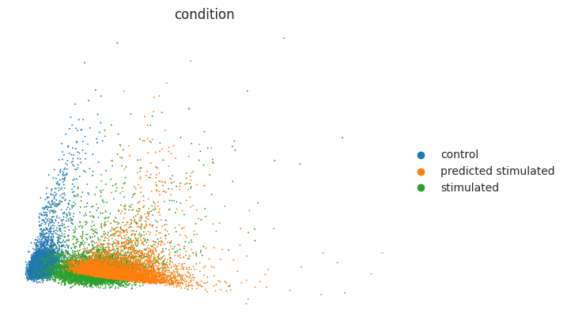
如上所观察到的，预测的受刺激细胞被移向了用 IFN-β 处理的 CD4T 受刺激细胞。不过，我们还应当查看差异表达基因（DEG），以核实最显著的 DE 基因是否也出现在预测的受刺激细胞中。下面，我们考察预测细胞与真实细胞之间的总体平均相关性。在此之前，我们先提取对照与受刺激细胞之间的 DEG：
cd4t_adata = adata[adata.obs["cell_type"] == "CD4 T cells"]
我们P 值（遵循 R 版 Augur 的实现）使用 scanpy 实现的 Wilcoxon 检验来估计 DEG。
sc.tl.rank_genes_groups(cd4t_adata, groupby="condition", method="wilcoxon")
diff_genes = cd4t_adata.uns["rank_genes_groups"]["names"]["stimulated"]
diff_genes
array(['ISG15', 'IFI6', 'ISG20', ..., 'EEF1A1', 'FTH1', 'RGCC'],
dtype=object)
scGen 提供了一个 reg_mean_plot 它计算预测细胞与现有 IFN-β 细胞的平均基因表达之间的 R² 相关性。R²（最大为 1）越高，预测相对于真值就越忠实。红色高亮的基因是 IFN-β 刺激后上调幅度最大的前 10 个 DEG，它们对成功的预测至关重要。可以看到，模型对平均值较高的基因表现很好，但对一些平均表达介于 0–1 之间的基因则失败了。我们还会衡量在非 DEG 上的准确性，因为模型在改变 DEG 表达的同时，不应改变那些不受扰动影响的基因。
r2_value = model.plot_reg_mean_plot(
eval_adata,
condition_key="condition",
axis_keys={"x": "predicted stimulated", "y": "stimulated"},
gene_list=diff_genes[:10],
top_100_genes=diff_genes,
labels={"x": "predicted", "y": "ground truth"},
show=True,
legend=False,
)
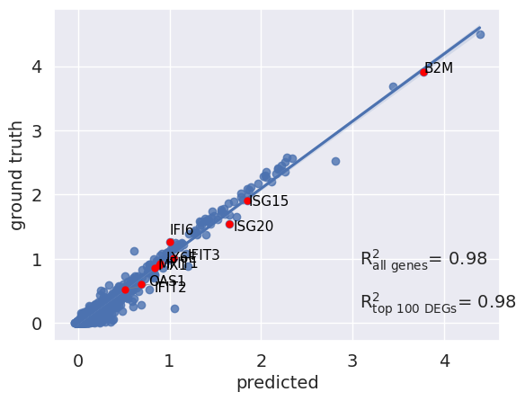
我们还可以进一步查看 IFN-β 上调幅度最大的那些基因的分布。例如，我们绘制了 ISG15（一个在 IFN 刺激后被诱导的著名基因）的表达分布。可以看到，模型判断该基因在 IFN-β 刺激后应当上调，而且它确实把数值移到了与真值（受刺激）细胞相近的范围。
sc.pl.violin(eval_adata, keys="ISG15", groupby="condition")
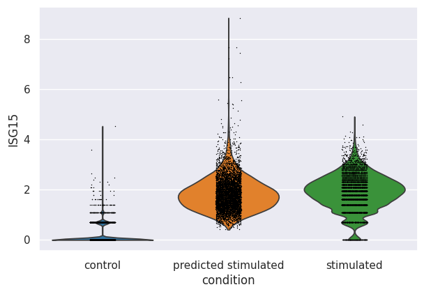
总体而言，我们以 scGen 为例，展示了扰动响应模型在“预测未见过群体在指定扰动下的基因表达”方面的应用。虽然扰动响应模型提供的是计算机模拟（in silico）的预测，但它们不能取代实际实验。此外，目前还不清楚预测出的响应中，有多少应归因于细胞类型特异的响应、又有多少是跨细胞类型的。不过，正如在 scGen 中观察到的，它能预测高表达基因的总体响应，但对低表达基因的预测较差——这需要进一步优化，也激励人们去开发更精细、更稳健的方法。
21.4. 分析单一混池 CRISPR 筛选#
扩展的、与 CRISPR 兼容的 CITE-seq（ECCITE-seq）能够在捕捉单导向 RNA（sgRNA）序列的同时，以抗体衍生标签（ADT）的形式测量转录组和表面蛋白。这使得我们可以施加许多基因扰动，并配合转录组读出，通过蛋白表达来探索和验证扰动的效果，从而让这种实验非常强大。然而，强大的能力不仅伴随着巨大的责任，也伴随着复杂性。
{kind=link}
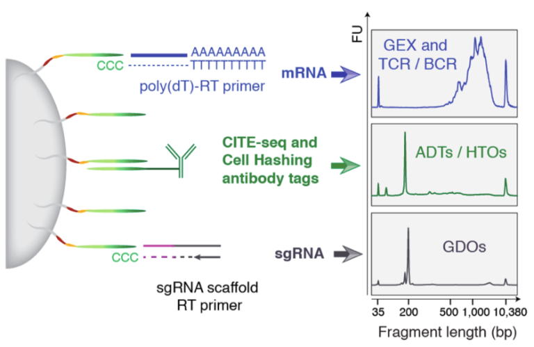
图21.1 ECCITE-seq 概览。mRNA 的测量是与表面蛋白表达一起、使用抗体衍生的标签完成的。生物学重复通过 hashtag 衍生的寡核苷酸来区分。导向 RNA 的指派则使用导向衍生的寡核苷酸来完成。图片取自（https://cite-seq.com/eccite-seq).#
在本次分析中，我们将P 值（遵循 R 版 Augur 的实现）使用 Papalexi 2021 数据集 [Papalexi et al., 2021]。该数据集包含约 20000 个受刺激的 THP-1 细胞，使用了 111 条 gRNA。用 IFN-γ、地西他滨（decitabine，DAC）和转化生长因子（TGF）-β1 的组合刺激 THP-1 细胞，会诱导出三个免疫检查点：程序性死亡配体 1（PD-L1）、PD-L2 和 CD86。这项 ECCITE-seq 实验的目标，是研究调控 PD-L1 表达的分子网络，因为 PD-L1 在人类癌症中经常被观察到，并且能够抑制 T 细胞介导的免疫响应 [Papalexi et al., 2021].
关于这一具体分析，我们希望:
移除诸如细胞周期效应或批次效应等混杂的变异来源。
确定哪些细胞受到了预期扰动的影响，哪些细胞逃脱了。
可视化扰动反应。
为了进行这一分析，我们将再次P 值（遵循 R 版 Augur 的实现）使用 pertpy，它为 scverse 生态系统实现了 Mixscape 流程，速度约快 5–10 倍。这个流程最初是为 Seurat 生态系统开发的，我们基本上遵循配套的 Seurat Vignette（https://satijalab.org/seurat/articles/mixscape_vignette.html).
我们首先导入 pertpy、scanpy 和 muon，预处理蛋白数据时会用到它们。
import muon as mu
import pertpy as pt
import scanpy as sc
第一步，我们用 pertpy 获取数据集。数据加载器返回的类型是一个 MuData 对象，其中包含转录组学测量、ADT 测量和导向 RNA 计数。
mdata = pt.dt.papalexi_2021()
mdata
MuData object with n_obs × n_vars = 20729 × 18776
4 modalities
rna: 20729 x 18649
obs: 'orig.ident', 'nCount_RNA', 'nFeature_RNA', 'nCount_HTO', 'nFeature_HTO', 'nCount_GDO', 'nCount_ADT', 'nFeature_ADT', 'percent.mito', 'MULTI_ID', 'HTO_classification', 'guide_ID', 'gene_target', 'NT', 'perturbation', 'replicate', 'S.Score', 'G2M.Score', 'Phase'
var: 'name'
adt: 20729 x 4
obs: 'orig.ident', 'nCount_RNA', 'nFeature_RNA', 'nCount_HTO', 'nFeature_HTO', 'nCount_GDO', 'nCount_ADT', 'nFeature_ADT', 'percent.mito', 'MULTI_ID', 'HTO_classification', 'guide_ID', 'gene_target', 'NT', 'perturbation', 'replicate', 'S.Score', 'G2M.Score', 'Phase'
var: 'name'
hto: 20729 x 12
obs: 'orig.ident', 'nCount_RNA', 'nFeature_RNA', 'nCount_HTO', 'nFeature_HTO', 'nCount_GDO', 'nCount_ADT', 'nFeature_ADT', 'percent.mito', 'MULTI_ID', 'HTO_classification', 'guide_ID', 'gene_target', 'NT', 'perturbation', 'replicate', 'S.Score', 'G2M.Score', 'Phase'
var: 'name'
gdo: 20729 x 111
obs: 'orig.ident', 'nCount_RNA', 'nFeature_RNA', 'nCount_HTO', 'nFeature_HTO', 'nCount_GDO', 'nCount_ADT', 'nFeature_ADT', 'percent.mito', 'MULTI_ID', 'HTO_classification', 'guide_ID', 'gene_target', 'NT', 'perturbation', 'replicate', 'S.Score', 'G2M.Score', 'Phase'
var: 'name'原始的 Seurat 对象包含四个 assay，它们被转换成各自独立的 AnnData 对象，再据此创建出这里下载的 MuData 对象。各个模态分别是：
adt：四个被捕获的抗体衍生标签（CD86、PDL1、PDL2、CD366）的计数矩阵，在这种场景下它们通常也被简单地称为“蛋白”。gdo：所使用的 111 条导向 RNA（gRNA）。为给每个细胞指派一个 gRNA 身份，需要检查导向衍生寡核苷酸（GDO）的计数。如果某个细胞对所有 gRNA 序列的计数都少于 5，就被归为阴性。对于其他所有细胞，则把计数最高的那条 gRNA 指派给它。对多于一条 gRNA 都有高计数的细胞，则被归为双联体（doublet）。hto：为了追踪每个生物学重复的身份，按照细胞 hashing 方案，用 hashtag 衍生的寡核苷酸（HTO）对样本做了哈希标记 [Stoeckius et al., 2018].rna：这对应于所有细胞的转录组测量，是常见的“细胞 × 基因”计数矩阵。
21.4.1. 预处理#
我们对 RNA 和 ADT 的预处理保持简单。首先，我们用 scanpy 的 normalize_total 对 RNA 做归一化，随后做对数变换并选择高变基因。为了对 ADT 做归一化，我们采用中心对数比（centered log ratio，CLR）变换 [Stoeckius et al., 2017].
sc.pp.normalize_total(mdata["rna"])
sc.pp.log1p(mdata["rna"])
sc.pp.highly_variable_genes(mdata["rna"], subset=True)
mu.prot.pp.clr(mdata["adt"])
21.4.2. 数据探索#
为了对数据集有个直观了解，我们在 UMAP 嵌入中可视化各重复、细胞周期阶段和扰动。
sc.pp.pca(mdata["rna"])
# We calculate neighbors with the cosine distance similarly to the original Seurat implementation
sc.pp.neighbors(mdata["rna"], metric="cosine")
sc.tl.umap(mdata["rna"])
sc.pl.umap(mdata["rna"], color=["replicate", "Phase", "perturbation"])
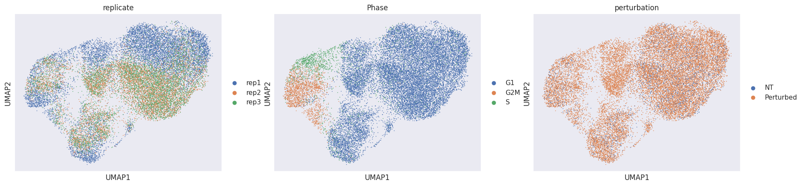
粗略浏览这些 UMAP 时，我们发现两个明显可见的问题：
许多细胞按重复 ID 分开。这是批次效应的常见标志。
细胞周期阶段是该嵌入中的一个混杂因素。
因此，我们现在尝试通过计算局部扰动特征（local perturbation signature），把细胞投影到一个“扰动空间”中，以缓解这些已发现的问题。
21.4.3. 计算局部扰动特征#
为缓解上述问题，我们将计算局部扰动特征。其核心思想是：通过从每个细胞中减去其在对照池（=NT）中 k 个最近邻细胞的平均表达，我们就能取回每个细胞中仅反映基因扰动的那一部分。这 k 个最近邻必须处于与目标细胞匹配的生物学状态，但不允许它们曾被任何 gRNA 靶向。所得到的这一部分被称为局部扰动特征。默认情况下，邻居数 k 设为 20。根据 Papalexi 等人的建议，我们建议把它设在 20 < k 30。一个 k 取值太小或太大，都不太可能从数据集中去除任何技术变异 [Papalexi et al., 2021].
我们现在用 pertpy 创建一个 Mixscape 对象，并计算扰动特征。
ms = pt.tl.Mixscape()
ms.perturbation_signature(
mdata["rna"],
pert_key="perturbation",
control="NT",
split_by="replicate",
n_neighbors=20,
)
# We create a copy of the object to recalculate the PCA.
# Alternatively we could replace the X of the RNA part of our MuData object with the `X_pert` layer.
adata_pert = mdata["rna"].copy()
adata_pert.X = adata_pert.layers["X_pert"]
sc.pp.pca(adata_pert)
sc.pp.neighbors(adata_pert, metric="cosine")
sc.tl.umap(adata_pert)
sc.pl.umap(adata_pert, color=["replicate", "Phase", "perturbation"])
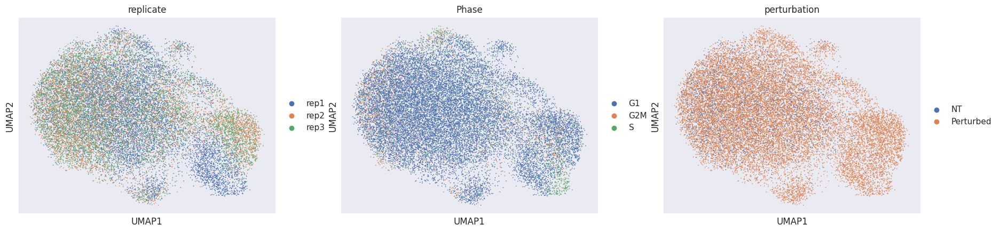
用扰动特征来计算邻居图和最终的嵌入，可以去除技术变异，并揭示出一个额外的、扰动特异的聚类。既然我们的数据已基本不含混杂效应，接下来就需要确定：对于哪些被靶向的细胞（=受扰动），扰动是成功的（=KO，敲除），哪些不成功（=NP，未受扰动）。
21.4.4. 识别无可探测扰动的细胞#
我们做的主要假设是：每个目标基因类别都是两个高斯分布的混合。其中一个代表成功的敲除（KO），另一个代表未受扰动（NP）的细胞。NP 细胞的分布应当与表达非靶向 gRNA（NT）的细胞相同。在估计出 KO 细胞的分布之后，Mixscape 会计算某个细胞属于 KO 分布的后验概率，并把后验概率大于 0.5 的细胞归类为 KO。把这一做法应用到全部 11 个目标基因类别，使我们既能识别出所有 KO 细胞，又能评估不同 gRNA 的靶向效力。
ms.mixscape(adata=mdata["rna"], control="NT", labels="gene_target", layer="X_pert")
现在我们可以为全部 111 条 gRNA 绘制类别分布图。
ms.plot_barplot(mdata["rna"], guide_rna_column="guide_ID")
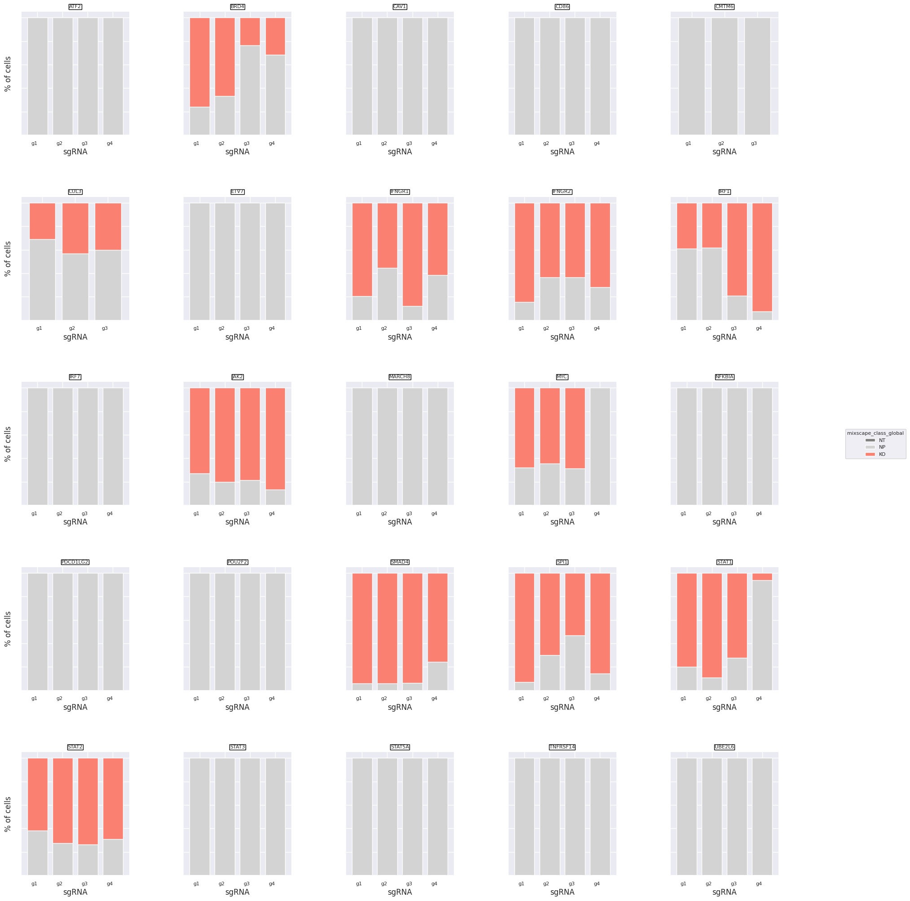
<Axes: title={'center': 'UBE2L6'}, xlabel='sgRNA', ylabel='% of cells'>
我们检测到每个类别内 gRNA 靶向效率的差异。例如，针对 STAT1 的 gRNA 4 似乎不太有效，而 gRNA 1–3 则有效。
我们来看看一个示例目标基因（IFNGR2）的扰动分数。
ms.plot_perturbscore(
adata=mdata["rna"], labels="gene_target", target_gene="IFNGR2", color="orange"
)
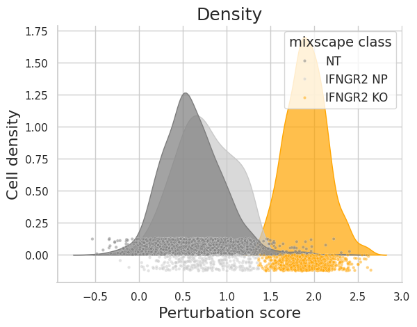
正如所料，NT 类与 IFNGR2 NP 类的分布相当吻合，而 IFNGR2 KO 的分布则明显发生了偏移。这一点也应当反映在后验概率中。
sc.settings.set_figure_params(figsize=(10, 10))
ms.plot_violin(
adata=mdata["rna"],
target_gene_idents=["NT", "IFNGR2 NP", "IFNGR2 KO"],
groupby="mixscape_class",
)
{kind=link}
后验概率清楚地把这两类分开，只剩下极少数不明确的情形。这一点还可以进一步凸显：在不同 mixscape 类别之间运行一个简单的 DE 检验，并按后验概率排序，把结果可视化在热图上。
ms.plot_heatmap(
adata=mdata["rna"],
labels="gene_target",
target_gene="IFNGR2",
layer="X_pert",
control="NT",
)
WARNING: dendrogram data not found (using key=dendrogram_mixscape_class). Running `sc.tl.dendrogram` with default parameters. For fine tuning it is recommended to run `sc.tl.dendrogram` independently.
WARNING: Groups are not reordered because the `groupby` categories and the `var_group_labels` are different.
categories: IFNGR2 KO, IFNGR2 NP, NT
var_group_labels: NT
{kind=link}
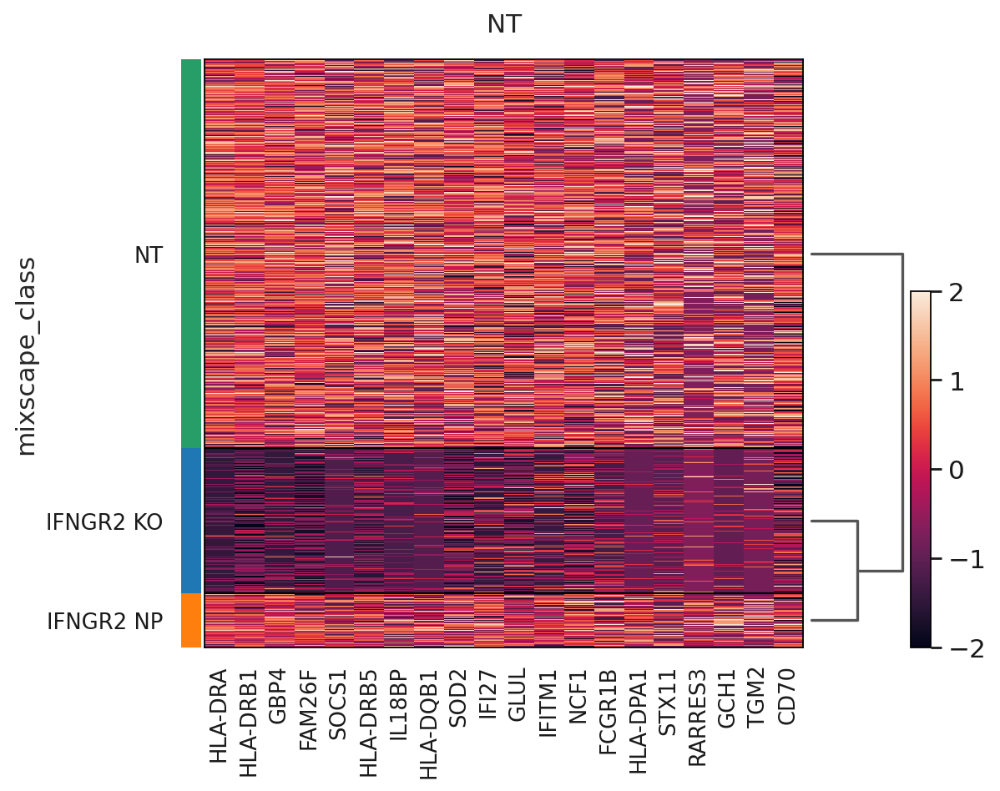
到目前为止，我们只用了转录组学数据，但现在可以利用测得的蛋白来证明：只有 IFGN 通路被敲除（KO）的细胞，其 PDL1 表达才出现下降。
mdata["adt"].obs["mixscape_class_global"] = mdata["rna"].obs["mixscape_class_global"]
ms.plot_violin(
adata=mdata["adt"],
target_gene_idents=["NT", "JAK2", "STAT1", "IFNGR1", "IFNGR2", "IRF1"],
keys="PDL1",
groupby="gene_target",
hue="mixscape_class_global",
)
{kind=link}
21.4.5. 用线性判别分析可视化扰动响应#
Mixscape 流程的最后一步，是计算并可视化扰动特异的聚类。这是通过应用线性判别分析（LDA）、并利用所得结果重新计算 UMAP 来实现的。LDA 试图同时利用基因表达和标签，使已知标签（在我们的例子中就是 mixscape 类别）的可分离性最大化。
ms.lda(adata=mdata["rna"], control="NT", labels="gene_target", layer="X_pert")
ms.plot_lda(adata=mdata["rna"], control="NT")
{kind=link}
LDA 凸显出至少两大类扰动，这从两个“孤岛”就能明显看出。不过，我们要强调：只有更严格的分析（例如先做通路分析、再做生物学验证），才能确定若干个敲除是否具有相似的效果。
21.5. Quiz#
21.6. 参考文献#
Matthew Amodio, David van Dijk, Ruth Montgomery, Guy Wolf, and Smita Krishnaswamy. Out-of-sample extrapolation with neuron editing. arXiv preprint arXiv:1805.12198, 2018.
Aritra Bhattacherjee, Mohamed Nadhir Djekidel, Renchao Chen, Wenqiang Chen, Luis M. Tuesta, and Yi Zhang. Cell type-specific transcriptional programs in mouse prefrontal cortex during adolescence and addiction. Nature Communications, 10(1):4169, Sep 2019. URL: https://doi.org/10.1038/s41467-019-12054-3, doi:10.1038/s41467-019-12054-3.
Chris J Frangieh, Johannes C Melms, Pratiksha I Thakore, Kathryn R Geiger-Schuller, Patricia Ho, Adrienne M Luoma, Brian Cleary, Livnat Jerby-Arnon, Shruti Malu, Michael S Cuoco, and others. Multimodal pooled perturb-cite-seq screens in patient models define mechanisms of cancer immune evasion. Nature genetics, 53(3):332–341, 2021.
Yuge Ji, Mohammad Lotfollahi, F Alexander Wolf, and Fabian J Theis. Machine learning for perturbational single-cell omics. Cell Systems, 12(6):522–537, 2021.
Hyun Min Kang, Meena Subramaniam, Sasha Targ, Michelle Nguyen, Lenka Maliskova, Elizabeth McCarthy, Eunice Wan, Simon Wong, Lauren Byrnes, Cristina M Lanata, and others. Multiplexed droplet single-cell rna-sequencing using natural genetic variation. Nature biotechnology, 36(1):89–94, 2018.
Mohammad Lotfollahi, Mohsen Naghipourfar, Fabian J Theis, and F Alexander Wolf. Conditional out-of-distribution generation for unpaired data using transfer vae. Bioinformatics, 36(Supplement_2):i610–i617, 2020.
Mohammad Lotfollahi, Anna Klimovskaia Susmelj, Carlo De Donno, Yuge Ji, Ignacio L Ibarra, F Alexander Wolf, Nafissa Yakubova, Fabian J Theis, and David Lopez-Paz. Learning interpretable cellular responses to complex perturbations in high-throughput screens. bioRxiv, 2021.
Mohammad Lotfollahi, F Alexander Wolf, and Fabian J Theis. Scgen predicts single-cell perturbation responses. Nature methods, 16(8):715–721, 2019.
Efthymia Papalexi, Eleni P. Mimitou, Andrew W. Butler, Samantha Foster, Bernadette Bracken, William M. Mauck, Hans-Hermann Wessels, Yuhan Hao, Bertrand Z. Yeung, Peter Smibert, and Rahul Satija. Characterizing the molecular regulation of inhibitory immune checkpoints with multimodal single-cell screens. Nature Genetics, 53(3):322–331, Mar 2021. URL: https://doi.org/10.1038/s41588-021-00778-2, doi:10.1038/s41588-021-00778-2.
Joseph M Replogle, Reuben A Saunders, Angela N Pogson, Jeffrey A Hussmann, Alexander Lenail, Alina Guna, Lauren Mascibroda, Eric J Wagner, Karen Adelman, Jessica L Bonnar, and others. Mapping information-rich genotype-phenotype landscapes with genome-scale perturb-seq. bioRxiv, 2021.
Nikolai Russkikh, Denis Antonets, Dmitry Shtokalo, Alexander Makarov, Yuri Vyatkin, Alexey Zakharov, and Evgeny Terentyev. Style transfer with variational autoencoders is a promising approach to rna-seq data harmonization and analysis. Bioinformatics, 36(20):5076–5085, 2020.
Michael A. Skinnider, Jordan W. Squair, Claudia Kathe, Mark A. Anderson, Matthieu Gautier, Kaya J. E. Matson, Marco Milano, Thomas H. Hutson, Quentin Barraud, Aaron A. Phillips, Leonard J. Foster, Gioele La Manno, Ariel J. Levine, and Grégoire Courtine. Cell type prioritization in single-cell data. Nature Biotechnology, 39(1):30–34, Jan 2021. URL: https://doi.org/10.1038/s41587-020-0605-1, doi:10.1038/s41587-020-0605-1.
Jordan W. Squair, Matthieu Gautier, Claudia Kathe, Mark A. Anderson, Nicholas D. James, Thomas H. Hutson, Rémi Hudelle, Taha Qaiser, Kaya J. E. Matson, Quentin Barraud, Ariel J. Levine, Gioele La Manno, Michael A. Skinnider, and Grégoire Courtine. Confronting false discoveries in single-cell differential expression. Nature Communications, 12(1):5692, Sep 2021. URL: https://doi.org/10.1038/s41467-021-25960-2, doi:10.1038/s41467-021-25960-2.
Jordan W. Squair, Michael A. Skinnider, Matthieu Gautier, Leonard J. Foster, and Grégoire Courtine. Prioritization of cell types responsive to biological perturbations in single-cell data with augur. Nature Protocols, 16(8):3836–3873, Aug 2021. URL: https://doi.org/10.1038/s41596-021-00561-x, doi:10.1038/s41596-021-00561-x.
Sanjay R Srivatsan, José L McFaline-Figueroa, Vijay Ramani, Lauren Saunders, Junyue Cao, Jonathan Packer, Hannah A Pliner, Dana L Jackson, Riza M Daza, Lena Christiansen, and others. Massively multiplex chemical transcriptomics at single-cell resolution. Science, 367(6473):45–51, 2020.
Marlon Stoeckius, Christoph Hafemeister, William Stephenson, Brian Houck-Loomis, Pratip K. Chattopadhyay, Harold Swerdlow, Rahul Satija, and Peter Smibert. Simultaneous epitope and transcriptome measurement in single cells. Nature Methods, 14(9):865–868, Sep 2017. URL: https://doi.org/10.1038/nmeth.4380, doi:10.1038/nmeth.4380.
Marlon Stoeckius, Shiwei Zheng, Brian Houck-Loomis, Stephanie Hao, Bertrand Z. Yeung, William M. Mauck, Peter Smibert, and Rahul Satija. Cell hashing with barcoded antibodies enables multiplexing and doublet detection for single cell genomics. Genome Biology, 19(1):224, Dec 2018. URL: https://doi.org/10.1186/s13059-018-1603-1, doi:10.1186/s13059-018-1603-1.
Xiajie Wei, Jiayi Dong, and Fei Wang. Scpregan, a deep generative model for predicting the response of single cell expression to perturbation. Bioinformatics, 2022.
Hans-Hermann Wessels, Alejandro Méndez-Mancilla, Efthymia Papalexi, William M Mauck, Lu Lu, John A Morris, Eleni Mimitou, Peter Smibert, Neville E Sanjana, and Rahul Satija. Efficient combinatorial targeting of rna transcripts in single cells with cas13 rna perturb-seq. bioRxiv, 2022.
Bo Yuan, Ciyue Shen, Augustin Luna, Anil Korkut, Debora S Marks, John Ingraham, and Chris Sander. Cellbox: interpretable machine learning for perturbation biology with application to the design of cancer combination therapy. Cell systems, 12(2):128–140, 2021.
21.7. 贡献者#
我们衷心感谢以下人员的贡献：
21.7.2. 审阅者#
Yuge Ji